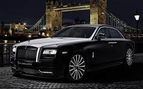

Rolls-Royce Limited is a British car and aero-engine manufacturing company established by Charles Stewart Rolls and Sir Frederick Henry Royce on 15th March, 1906. Rolls-Royce was founded in Manchester, England and its headquarters is based in Derby, England, United Kingdom. The company has been in existence for over 43 years. Rolls-Royce is known for their superior engine quality and also, known for manufacturing high-powered “R” engines responsible for land and air. On top of their outstanding reputation, Rolls-Royce is well branded for successful performances in automobile racing, their speed records are remarkable. One year later, in 1907, Charles Rolls interests detoured into flying. His interests lead him to persuade Royce …show more content.The deontological theory views the action of Rolls-Royce as dishonest and unethical. The company was only concerned about themselves and maximizing profits and hired a network of agents to help secure contracts in at least twelve different countries around the world by using bribes. Bribes are illegal and confirmation of such acts can result in imprisonment; however, Rolls-Royce was unconcerned about the after-math of such actions because their main concern was making a profit, whether legally or illegally. It is the duty of all businesses to earn profits honestly and avoid illegal actions. Rolls-Royce should have acted ethically and secured the honest contracts which would save the reputation of the company, prevent lawsuits, imprisonment and …show more content… As stated earlier, the deontological theory states that there is a duty to perform certain acts not because of some benefit to ourselves or others, but because of the nature of these actions or the rules from which they follow. Deontology theory abides by the rules of doing the right thing always and avoid wrong doing. The word “Deon” comes from a Greek word meaning duty; therefore, deontologists believe all companies has a duty to conduct business in the right and most ethical way. Rolls-Royce bribery, from a deontologist perspective is seen as immoral and unethical practice. In hindsight, they should have conducted business to gain profits in a just manner, no matter the consequences of doing the right thing, it would just be more ethical. Although, the results of doing the right thing may not have resulted in gaining profits and earning up to millions in profits but it would be the most ethical way to operate a business, especially not having the company’s name making headlines for a scandal. Over $10.5 billion dollars was paid in the period of years to land contracts, which is a huge sum of money to spend on landing major contracts. That money could have been invested wisely in to the company and they may be could have reaped more benefits. On Wednesday 16th November, 2016, a Rio executive named, Alan
The official founding date of the German motor vehicle manufacturer BMW is 7 March 1916, when an aircraft producer called Bayerische Flugzeugwerke (formerly Otto Flugmaschinenfabrik) was established.[1][2] This company was renamed to Bayerische Motoren Werke (BMW) in 1922. However, the BMW name dates back to 1917, when Rapp Motorenwerke changed its name to Bayerische Motoren Werke.[3] BMW's first product was a straight-six aircraft engine called the BMW IIIa. Following the end of World War I, BMW remained in business by producing motorcycle engines, farm equipment, household items and railway brakes. This was not enough and the company was suspended, bankrupt really, from 6 November 1918 to 1 February 1919. BMW turned to motorcycle engine manufacturing, building a smooth operating horizontally opposed engine to keep the centre of mass low and thus make a more responsive machine. The engine was well received but the motorcycles made using it were not and sold slowly. BMW's General Director Franz Josef Popp had to branch out again and BMW became a sub-contract manufacturer for braking system manufacturer Knorr Bremse. The major shareholder in BMW, Vienna based Italian speculator Camillo Castiglionli, sold all of his shares to Knorr Bremse in May 1920, who then acquired the remaining shares to make BMW a wholly owned subsidiary still run by Popp. Less than two years later Popp persuaded Castiglionli buy back the BMW company name and buy the Bayerische Flugzeugwerke for its production site on the other side of the air field. There the company produced its first motorcycle in 1923. This was the legendary Max Fritz designed BMW R32 shaft drive motorcycle, which featured an integrated gearbox, recirculating rather than total loss lubrication and with the cylinder heads poking out for cooling. BMW became an automobile manufacturer in 1928 when it purchased Fahrzeugfabrik Eisenach, which built Austin Sevens at that time under licence (under the Dixi marque).[4] The first car sold as a BMW was a rebadged Dixi called the BMW 3/15. Throughout the 1930s, BMW expanded its range into sports cars and larger luxury cars. Aircraft engines, motorcycles, and automobiles would be BMW's main products until World War II. During the war, against the wishes of Popp, BMW concentrated on aircraft engine production, with motorcycles as a side line, and automobile manufacture stopped altogether. BMW's factories were heavily bombed during the war, its automobile factory in the Russian controlled East Germany and its remaining West German facilities were banned from producing motor vehicles or aircraft after the war. Again, the company survived by making pots, pans and bicycles. In 1948, BMW restarted motorcycle production. BMW resumed car production in Bavaria in 1952 with the BMW 501 luxury saloon. The range of cars was expanded in 1955, through the production of the cheaper Isetta microcarafter acquiring the rights from Italian company Iso. Slow sales of loss making luxury cars, declining profitable motorcycle sales as the economy improved and small profit margins from microcars meant BMW was in serious financial trouble. A "600" 4 seat version of the Isetta with the "fridge" front door and one side door and a 600 cc air cooled horizontal twin motorcycle engine, was a sales flop. This led to a "proper car" styled by Micholetti based on the 600 was developed but consumed all available fund leading to very limited production in 1959. In December 1959, the company was nearly taken over by rival Daimler-Benz. Herbert Quandt and Harald Quandt acquired a controlling interest, largely based on the sales prospect of the 700 resulted in the company surviving as a separate entity. The Quandt's father, Günther Quandt, was a well-known German industrialist. Quandt joined the Nazi party in 1933 and made a fortune arming the German Wehrmacht, manufacturing weapons and batteries.[5][6] Many of his enterprises had been appropriated from Jewish owners under duress and with minimal compensation. At least three of his enterprises made extensive use of slave laborers, as many as 50,000 in all.[7][8] One of his battery factories had its own on-site concentration camp, complete with gallows. While the Quandt family and BMW were not directly connected during the war, funds amassed in the Nazi era by his father allowed Herbert Quandt to buy BMW.[9] The BMW 700 was successful and assisted in the company's recovery. The 1962 introduction of the BMW New Class compact sedans was the beginning of BMW's reputation as a leading manufacturer of sport-oriented cars. Throughout the 1960s, BMW expanded its range by adding coupe and luxury sedan models. The BMW 5 Series mid-size sedan range was introduced in 1972, followed by the BMW 3 Series compact sedans in 1975, the BMW 6 Series luxury coupes in 1976 and the BMW 7 Series large luxury sedans in 1978. The BMW M division released its first road car, a mid-engine supercar, in 1978. This was followed by the BMW M5 in 1984 and the BMW M3 in 1986. Also in 1986, BMW introduced its first V12 engine in the 750i luxury sedan. The company purchased the Rover Group in 1994, but the takeover was not successful and caused BMW large financial losses. In 2000, BMW sold off most of the Rover brands, retaining only Mini. BMW acquired the rights to the Rolls-Royce brand in 1998. The 1995 BMW Z3 expanded the line-up to include a mass-production two-seat roadster, and the 1999 BMW X5 was the company's entry into the SUV market. Their first mass-produced turbocharged petrol engine was introduced in 1980 (m102), with most engines switching over to turbocharging over the following decade. The first hybrid BMW was the 2010 BMW ActiveHybrid 7, and BMW's first electric car was the BMW i3 city car, which was released in 2013. After many years of establishing a reputation for sporting rear-wheel drive cars, BMW's first front-wheel drive car was the 2014 BMW 2 Series Active Tourer multi-purpose vehicle (MPV).